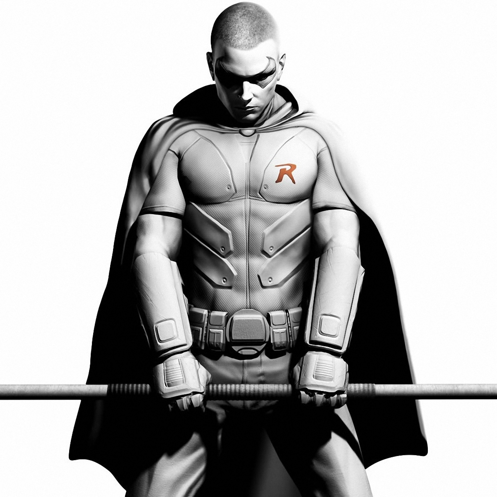

Genom att se sina föräldrars mördas i Crime Alley, av en okänd mördare, såras Bruce Wayne för resten av sitt liv. Han tas hand om Doktorn Lesley Thompson och av familjens tjänare Alfred. Risken att komma till barnhem är överhängande, men med hjälp av Alfred mutar de inspektören från barnhemmet och Bruce får bo kvar i sitt Wayne Manor. Han bestämmer sig för att hämnas sina föräldrars död och bli hämnare och beskyddare för de svaga i Gotham City. Han reser jorden runt för att förbättra sig själv och lära sig om kampsporter (av bl.a. Lady Shiva), kriminologi, tränar upp sin kropp och lär sig allt om hur man bekämpar brott. Väl tillbaka vill han bli en symbol för att bekämpa ondskan och sätta skräck alla brottslingar. Han får se en fladdermus plötsligt när han sitter och läser en bok och bestämmer sig för att detta ska bli hans symbol i kampen mot ondskan. Han bygger ut Wayne Manor, och hittar grottor under huset, som blir hans operationsbas, fullt med datorer, bilar, motorcyklar och andra fordon. Han kallar sin operationsbas läderlappsgrottan, eller Bat Cave.
Robin är en fiktiv person, som är sidekick till Batman (Läderlappen), i serier, filmer och TV-serier om densamme. Robin är liksom Batman själv maskerad. Robin är engelska för "rödhake" och således är han även till namnet en pendang till "läderlappen". Det har i dagsläget (2010) funnits sex olika Robin - först ut var Dick Grayson som var cirkusakrobat med sina föräldrar, när de dog adopterades Dick av Bruce Wayne, och Dick blev Robin som var Bruce Waynes skyddsling och dök upp första gången i serierna 1940. Det är denna inkarnation som de flesta förknippar med rollen som Batmans vapendragare - den som figurerar i filmer och TV-serier. Dick växte dock upp och skapade till slut ett nytt alter ego. Under 1980-talet togs rollen som Robin över av Jason Todd som senare mördades av Jokern. Den tredje Robin hette Tim Drake. 2004 blev Tim tvungen (tvingad av sin far) att lägga av med att vara Robin. Nummer fyra var en ung kvinna vid namn Stephanie Brown, dåvarande flickvän åt Tim som tidigare kallat sig för Spoiler. Hon blev senare till synes mördad av Black Mask men detta visar sig långt senare vara fel. Efter Stephanies "död" fortsätter Tim Drake som Robin. Under 2008-09 försvinner Batman och antas vara död. Dick Grayson tar över Batmans mantel och väljer då Damian Wayne som den nya Robin eftersom Dick ser Tim som sin jämlike och inte en sidekick.
Jokern kom bl.a. från den amerikanska stumfilmen Skrattmänniskan av Paul Leni (1928), där huvudpersonen hade fått munnen vanställd och inte kunde sluta le (filmen baseras i sin tur på romanen Skrattmänniskan av Victor Hugo). Ansiktsdragen till Jokern lånades ganska oblygt från skådespelaren Conrad Veidt i dennes roll som Gwynplaine i The Man Who Laughs. Veidt är annars mest känd för sin roll som somnambulen Cesare i stumfilmsklassikern Dr Caligaris Kabinett. Jokern dök upp för första gången i Batman nr 1 (1940), i ett äventyr som gjordes av Bob Kane, Bill Finger och Jerry Robinson. Från början var han en kallblodig mördare vars ursprung och verkliga namn var okänt. Hans signum var ett spelkort med en joker på, som han lämnade efter sig på brottsplatsen och han talade om för alla via radio vad hans nästkommande brott skulle vara. Jokern har som främsta vapen ett egenutvecklat nervgift, som förutom att döda även får offrets käkmuskler att forma sig till ett förvridet stort leende. I och med hårdare regler för serier i USA på 1950-talet och införandet av The Comics Code, som gjorde att våldsinslagen minskade markant i serien Batman, kom Jokern att bli mer av en renodlat komisk figur som verkade tämligen harmlös. Det skulle dröja ända till 1973 innan Jokern åter porträtterades som den sinnessjuka och empatilösa massmördare han från början var – en trend som hållit i sig ända fram till våra dagar. Jokern är numera mer obehaglig än någonsin och är bland annat ansvarig för mordet på den andre Robin (Jason Todd), invalidiseringen av kommissarie Gordons adoptivdotter Barbara Gordon (den första Batgirl) samt mordet på Gordons fru. På 1970-talet hade Jokern en egen kortlivad serietidning i USA, med manus av Denny O'Neil och teckningar av Irv Novick. På senare år har han inte bara plågat Batman, utan även dykt upp som motståndare till flera andra superhjältar från DC Comics.
Pingvinen, engelska The Penguin, är en seriefigur, en skurk som förekommer i Batman, och debuterade i Detective Comics #58 (december 1941). Figuren skapades av Bob Kane och Bill Finger. Figuren är känd som en av Batmans äldsta och mest långlivade fiender. Han är en gangster och tjuv som beskriver sig själv som en "gentlemannabrottsling". Hans verksamhet på sin nattklubb fungerar som en täckmantel för hans kriminella aktivitet, eftersom han helst håller en låg profil. Till skillnad från de flesta andra av Batmans fiender så är Pingvinen i full kontroll över sina handlingar och är helt sinnesfrisk.
Catwoman, på svenska tidigare känd som Kattkvinnan, är en seriefigur skapad av Bob Kane and Bill Finger från förlaget DC Comics. Den ursprungliga Catwoman, från början en bifigur till serien Batman, är en maskerad inbrottstjuv som egentligen heter Selina Kyle. Figuren dök upp redan 1940 i det första numret av den amerikanska serietidningen Batman. Även om Catwoman är en skurk, har hennes förhållande till Batman inte bara varit fientligt. Tidvis har det funnits ett visst romantiskt intresse mellan dem. Under 1990-talet har Catwoman fått en egen serie i USA. I denna serie har Selina Kyle för närvarande lämnat över Catwoman-rollen till sin väninna Holly Robinson.